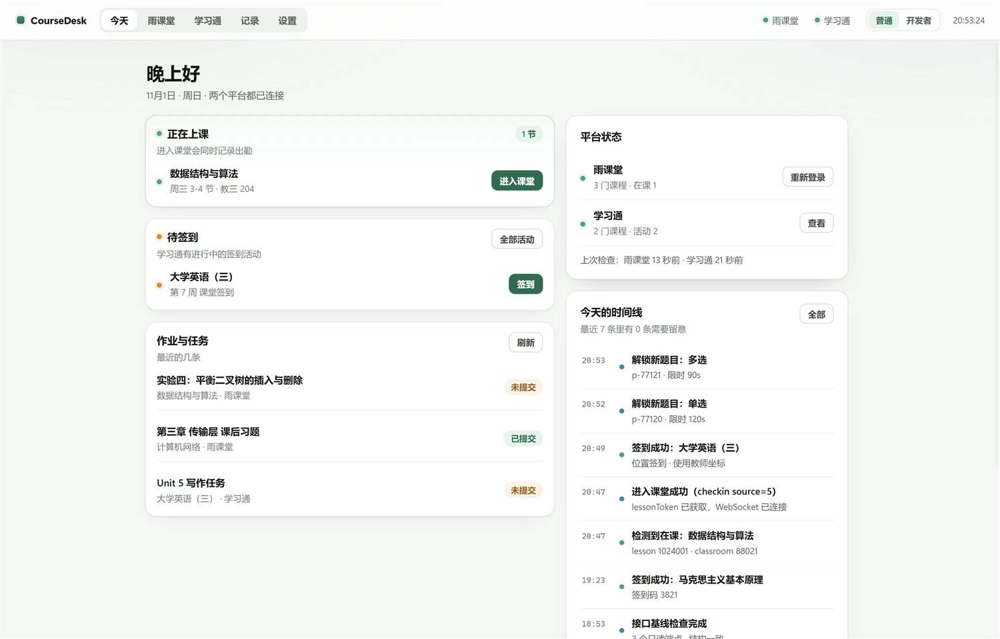
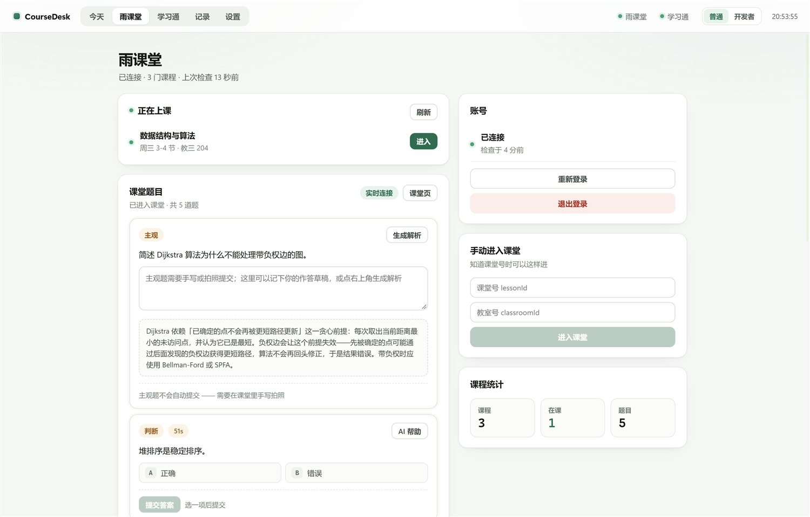
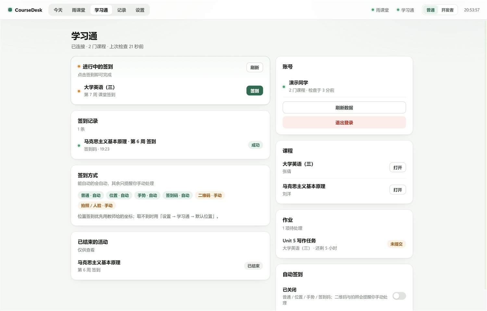
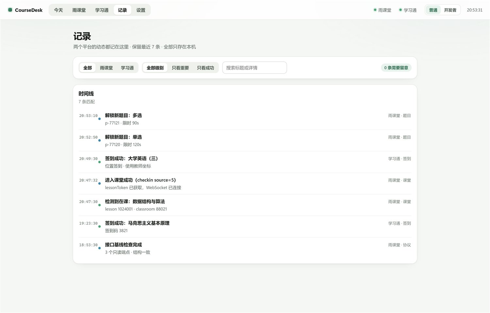
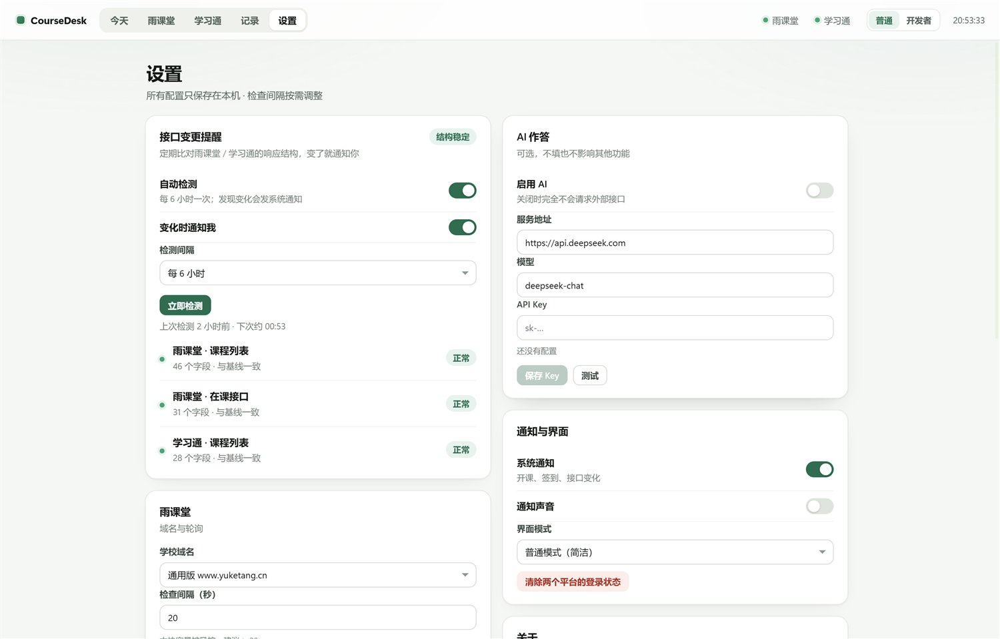
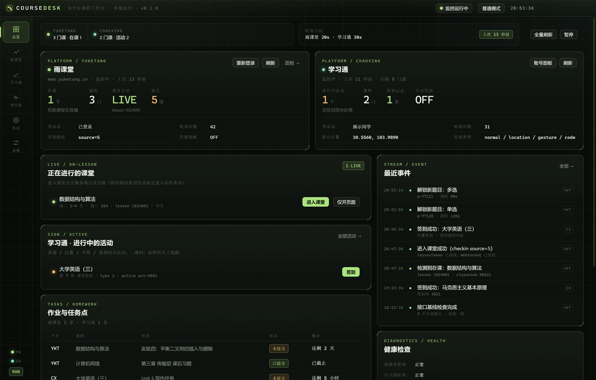

在课一出现，就知道
雨课堂按在课接口轮询（15 秒起），学习通逐课程扫活动。开课、新签到、提交失败都会推一条系统通知 —— 不用守着页面刷新。
Windows 桌面端 · Electron · 数据只留在本机
雨课堂 × 学习通。在课状态、随堂题、签到与作业收进一屏； 接口结构变了自己会知道，而不是悄悄失败。
这不是又一个脚本集合。它把两个平台的状态收在一个窗口里，把"该我动手了"的信号留在最上面。
雨课堂按在课接口轮询（15 秒起），学习通逐课程扫活动。开课、新签到、提交失败都会推一条系统通知 —— 不用守着页面刷新。
polling · notify · dedupe 60s
题干和选项从课件里取，点选或让 AI 给建议，确认后提交。主观题只出解析，永远不自动提交 —— 这条是代码级硬规则。
presentation/fetch · WS unlockproblem
只打只读 GET，把响应字段路径做成结构指纹，和基线比。字段增删会变成一条 warn 和一份差异清单， 而不是某天打开发现全空。
sha-1(paths)[0:12] · baseline diff
平时用普通模式：浅色、少术语、能点的按钮。排查时切开发者模式：结构指纹、基线差异、主进程日志。 切换不打断正在跑的轮询。






一屏看完：在课、待签到、作业、时间线与快捷操作。重复的同类事件会折叠成 ×N。
协议细节来自公开的开源实现（见仓库 docs/协议依据.md）。下面是接进去的部分。
| 能力 | 雨课堂 | 学习通 |
|---|---|---|
| 登录 | 内嵌浏览器扫码，cookie 落在 persist 分区 | 账号密码（AES 加密提交）或网页扫码 |
| 课程与在课 | ✓ courses/list · 在课接口 | ✓ backclazzdata · activelist |
| 进入课堂 / 签到 | ✓ checkin，source 指纹可配 | ✓ 位置 / 手势 / 签到码自动 |
| 课堂实时 | ✓ 自建 WS，解析 11 种 op | — |
| 随堂题 | ✓ 题干 / 选项 / 点选提交 | — |
| AI 作答 | ✓ off / confirm / auto，主观题只出解析 | — |
| 作业 | exercise list（依赖 leafId） | work/task-list 解析 |
| 视频进度 | 按播放器事件形状上报，默认关 | — |
| 接口变更检测 | ✓ | ✓ |
| 两套界面 | ✓ | ✓ |
网页端没有独立的签到接口。教师开签到后，学生进入课堂即出勤 —— 进入动作本身就是一次 checkin， 顺手换回 WS 握手要用的 token。
GET /v2/api/web/…/on-lesson
POST /api/v3/lesson/checkin
lessonToken · identityId
wss://<host>/wsapp/
题目从哪来：WS 的 unlockproblem 只给 problemId 和限时。
题干先去已缓存的 slides 里找，找不到就拉一次课件，再不行查 problem/detail。
改版怎么发现：对 3 个只读端点算字段路径指纹，和上一次基线比；未知 WS op 计数。 变化进事件流，也在「设置 → 接口变更提醒」里用人话说明。
不需要装 Node 就能用；想改代码再往下看。
便携版（免安装）或安装包，Windows x64。首次运行 SmartScreen 会拦一次：更多信息 → 仍要运行。
雨课堂走内嵌浏览器扫码；学习通可用账号密码或网页扫码。登录态存在本机 persist 分区，重启复用。
两个平台都有课程数就算接通。轮询节拍、签到渠道、AI 开关都在设置里，改完立刻生效。
# Node ≥ 22 / Electron 45
git clone https://github.com/Qiuizi/CourseDesk.git
cd CourseDesk
npm install
npm run dev # 开发模式（HMR）
npm test # 协议纯函数 17 项
npm run pack # 打包便携版 exe写下来，省得互相猜。
cookie 在 %APPDATA%/CourseDesk/Partitions/coursedesk；设置、事件、缓存与
AI Key 在 %APPDATA%/CourseDesk/state.json（Key 用 Windows DPAPI 加密）。
日志按天写到 logs/coursedesk-YYYYMMDD.jsonl。
雨课堂作业需要课程的 leafId，部分学校不下发。这不影响课堂、签到与题目。
看设置：「自己答」不调用模型；「我确认后提交」只把建议填进题目卡；「自动提交」仅对客观题生效。 主观题在任何档位都只生成解析。
转人工：应用会提醒你去官方页面处理，不尝试识别或伪造。
设置 → 雨课堂 → 学校域名，填 pro.yuketang.cn 或学校子域即可。
滚动 / ↑↓ 翻页